Code
import warnings
warnings.simplefilter("ignore", category=SystemError)assignment-5Poornima Bhatia
November 23, 2024
def show_image_grid(images, M, N, title='Title', figsize=8):
# Assuming 'images' is a numpy array of shape (num_images, height, width, channels)
if M==1:
row_size = figsize
col_size = figsize//4
elif N==1:
row_size = figsize//4
col_size = figsize
else:
row_size, col_size = figsize, figsize
fig, axes = plt.subplots(M, N, figsize=(row_size, col_size))
if len(images.shape) < 4:
images = np.expand_dims(images.copy(), axis=0)
fig.suptitle(title)
for i in range(M):
for j in range(N):
if M==1 and N==1:
ax = axes
elif M == 1 or N==1:
ax = axes[max(i, j)]
else:
ax = axes[i, j]
index = i * N + j
if index < images.shape[0]:
ax.imshow(cv2.cvtColor(images[index], cv2.COLOR_BGR2RGB))
ax.axis('off')
plt.tight_layout()
plt.show()# Loading all the images in the drive
pair_images = []
paths = natsorted(glob(r'E:\iitgn-mtech\sem-3rd\computer-vision\disparity-map-reconstruction-using-stereo-pair\dataset\E\*'))
for idx in tqdm(range(0, len(paths), 2)):
pair_images.append(np.array([cv2.imread(paths[idx], 1), cv2.imread(paths[idx+1], 1)]))
for pairs in pair_images:
show_image_grid(pairs, 1, 2, 'Stereo Pairs', figsize=8) 0%| | 0/5 [00:00<?, ?it/s]100%|██████████| 5/5 [00:00<00:00, 48.29it/s]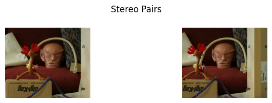
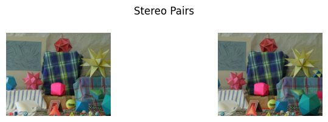
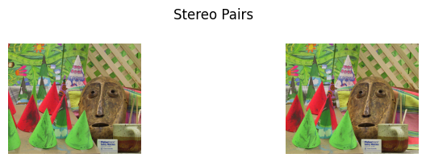
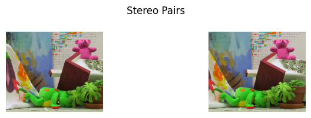
def build_matching_point_pairs(image_a, image_b):
matching_point_pair_lst = [] # [[image_a points], [image_b points]]
# Convert images to grayscale for feature detection
gray_a = cv2.cvtColor(image_a, cv2.COLOR_BGR2GRAY)
gray_b = cv2.cvtColor(image_b, cv2.COLOR_BGR2GRAY)
# Initialize the SIFT detector
sift = cv2.SIFT_create()
# Detect keypoints and descriptors in both images
keypoints_a, descriptors_a = sift.detectAndCompute(gray_a, None)
keypoints_b, descriptors_b = sift.detectAndCompute(gray_b, None)
# Check if either image has no descriptors, which means no keypoints were found
if descriptors_a is None or descriptors_b is None:
print("No descriptors found in one of the images.")
return [], [] # No matching points found
# Use Brute-Force Matcher to find the best matches
bf = cv2.BFMatcher(cv2.NORM_L2, crossCheck=True) # Use L2 norm and cross-checking for better results
matches = bf.match(descriptors_a, descriptors_b)
# Sort the matches based on distance (the lower the distance, the better the match)
matches = sorted(matches, key=lambda x: x.distance)
# Extract the matched points (keypoints) from both images
matching_points = [[keypoints_a[match.queryIdx].pt for match in matches],
[keypoints_b[match.trainIdx].pt for match in matches]]
# Draw the matches on the images
matched_image = cv2.drawMatches(image_a, keypoints_a, image_b, keypoints_b, matches[:10], None, flags=cv2.DrawMatchesFlags_NOT_DRAW_SINGLE_POINTS)
# Return the list of matched points
return matching_points, matched_imageglobal_matching_point_pair_lst = []
for pairs in pair_images:
matching_points, matched_image = build_matching_point_pairs(pairs[0], pairs[1])
global_matching_point_pair_lst.append(matching_points)
# Plot the matching points here
plt.figure(figsize=(10, 5))
plt.imshow(cv2.cvtColor(matched_image, cv2.COLOR_BGR2RGB))
plt.title("Matching Points between Stereo Pairs")
plt.axis('off')
plt.show()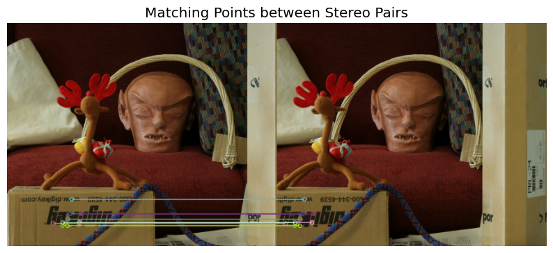
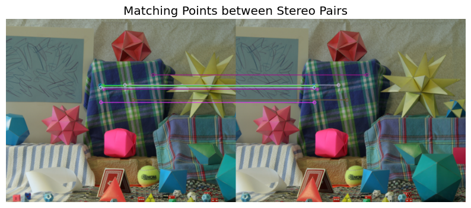
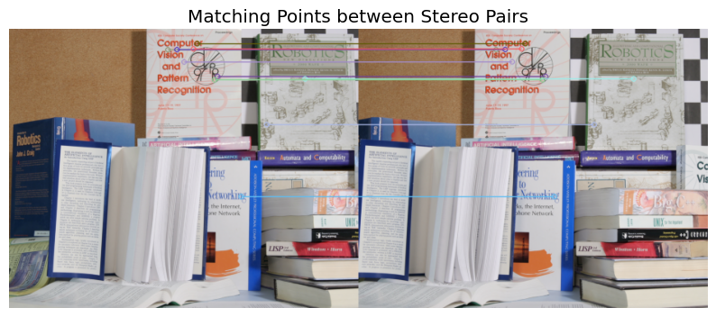
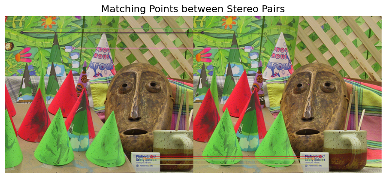
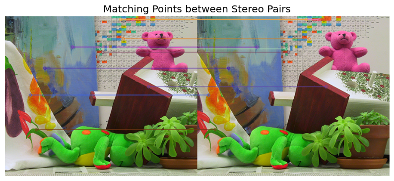
def estimate_camera_matrix(matching_point_a, matching_point_b):
focal_length = 138 # You can change this if you have the actual value
cx, cy = 320, 240 # Assuming the center of the image is at (320, 240)
K = np.array([[focal_length, 0, cx],
[0, focal_length, cy],
[0, 0, 1]])
# Convert matching points into numpy arrays
points_a = np.array(matching_point_a, dtype=np.float32).reshape(-1, 2)
points_b = np.array(matching_point_b, dtype=np.float32).reshape(-1, 2)
# Step 1: Find the Fundamental Matrix using the matched points
F, mask = cv2.findFundamentalMat(points_a, points_b, method=cv2.FM_LMEDS)
# Step 2: Compute the Essential Matrix using the Fundamental Matrix and Camera Intrinsics
E = K.T @ F @ K
# Step 3: Decompose the Essential Matrix to get the Rotation (R) and Translation (t)
_, R, t, mask_pose = cv2.recoverPose(E, points_a, points_b, K)
if np.allclose(np.dot(R.T, R), np.eye(3)):
print("Rotation matrix is orthogonal.")
else:
print("Warning: Rotation matrix is NOT orthogonal.")
# Return the Camera Matrix [R | t]
camera_matrix = np.hstack((R, t))
return camera_matrixglobal_camera_matrix_lst = []
for matching_point_pair in global_matching_point_pair_lst:
matching_points_a = matching_point_pair[0]
matching_points_b = matching_point_pair[1]
camera_matrix = estimate_camera_matrix(matching_points_a, matching_points_b)
global_camera_matrix_lst.append(camera_matrix)
print("Camera Matrix [R | t] for this stereo pair:")
print(camera_matrix)
print("\n" + "-"*40 + "\n")Rotation matrix is orthogonal.
Camera Matrix [R | t] for this stereo pair:
[[ 9.99998598e-01 -1.60313959e-03 -4.82693350e-04 -9.99216515e-01]
[ 1.60136051e-03 9.99992006e-01 -3.66383597e-03 2.20554968e-02]
[ 4.88563131e-04 3.66305787e-03 9.99993172e-01 -3.28620020e-02]]
----------------------------------------
Rotation matrix is orthogonal.
Camera Matrix [R | t] for this stereo pair:
[[ 9.99999579e-01 -3.14816007e-04 -8.62165578e-04 -9.99899208e-01]
[ 3.13520036e-04 9.99998822e-01 -1.50288034e-03 9.01369774e-03]
[ 8.62637692e-04 1.50260940e-03 9.99998499e-01 -1.09693367e-02]]
----------------------------------------
Rotation matrix is orthogonal.
Camera Matrix [R | t] for this stereo pair:
[[ 9.99999937e-01 -3.03791449e-04 -1.84105731e-04 -9.99991397e-01]
[ 3.03797351e-04 9.99999953e-01 3.20293985e-05 3.95334251e-03]
[ 1.84095992e-04 -3.20853273e-05 9.99999983e-01 1.25546710e-03]]
----------------------------------------
Rotation matrix is orthogonal.
Camera Matrix [R | t] for this stereo pair:
[[ 9.99999293e-01 -4.72984563e-04 -1.09137490e-03 -9.99586640e-01]
[ 4.72824353e-04 9.99999877e-01 -1.47049796e-04 -9.79479089e-03]
[ 1.09144432e-03 1.46533663e-04 9.99999394e-01 -2.70298306e-02]]
----------------------------------------
Rotation matrix is orthogonal.
Camera Matrix [R | t] for this stereo pair:
[[ 9.99999579e-01 -7.21677832e-04 5.67285625e-04 -9.99613645e-01]
[ 7.22932787e-04 9.99997285e-01 -2.21512651e-03 1.19989960e-02]
[-5.65685477e-04 2.21553568e-03 9.99997386e-01 -2.50715766e-02]]
----------------------------------------
def draw_epipolar_lines(image_a, image_b, points_a, points_b, F, num_lines_to_draw=1):
# Convert to color images if they are grayscale (necessary for drawing colored lines)
if len(image_a.shape) == 2:
image_a_color = cv2.cvtColor(image_a, cv2.COLOR_GRAY2BGR)
else:
image_a_color = image_a
if len(image_b.shape) == 2:
image_b_color = cv2.cvtColor(image_b, cv2.COLOR_GRAY2BGR)
else:
image_b_color = image_b
# Select a random subset of matching points to draw lines for
selected_indices = random.sample(range(len(points_a)), min(num_lines_to_draw, len(points_a)))
for idx in selected_indices:
pt1 = points_a[idx]
pt2 = points_b[idx]
# Compute the epipolar line in the right image (image_b) for point in image_a (pt1)
epiline_b = np.dot(F, np.array([pt1[0], pt1[1], 1.0])) # l_b = F * p_a
# Compute the epipolar line in the left image (image_a) for point in image_b (pt2)
epiline_a = np.dot(F.T, np.array([pt2[0], pt2[1], 1.0])) # l_a = F^T * p_b
# Find intersections with the image borders (y-intercepts)
# For image_a, epiline_a = [a, b, c] -> a*x + b*y + c = 0
x0_a = 0
y0_a = int(-epiline_a[2] / epiline_a[1]) # y = -(c + a*x)/b, x=0 -> y = -c/b
x1_a = image_a_color.shape[1]
y1_a = int(-(epiline_a[2] + epiline_a[0] * x1_a) / epiline_a[1]) # Intersection with the right side
# For image_b, epiline_b = [a, b, c] -> a*x + b*y + c = 0
x0_b = 0
y0_b = int(-epiline_b[2] / epiline_b[1]) # y = -(c + a*x)/b, x=0 -> y = -c/b
x1_b = image_b_color.shape[1]
y1_b = int(-(epiline_b[2] + epiline_b[0] * x1_b) / epiline_b[1]) # Intersection with the right side
# Draw the epipolar lines on the images
cv2.line(image_a_color, (x0_a, y0_a), (x1_a, y1_a), (0, 255, 0), 1) # Green line for image_a
cv2.line(image_b_color, (x0_b, y0_b), (x1_b, y1_b), (0, 255, 0), 1) # Green line for image_b
return image_a_color, image_b_color
def perform_stereo_rectification(image_a, image_b, matching_point_a, matching_point_b, camera_matrix):
focal_length = 138 # Focal length
cx, cy = 320, 240 # Image center
K = np.array([[focal_length, 0, cx],
[0, focal_length, cy],
[0, 0, 1]])
# Convert matching points to numpy arrays
points_a = np.array(matching_point_a, dtype=np.float32)
points_b = np.array(matching_point_b, dtype=np.float32)
# Compute the Fundamental Matrix (F)
F, mask = cv2.findFundamentalMat(points_a, points_b, cv2.FM_LMEDS, ransacReprojThreshold=1.0)
if F is None:
print("Fundamental matrix computation failed.")
return None
# Compute the Essential Matrix (E) using the camera matrix and the Fundamental Matrix
E = K.T @ F @ K
# Recover rotation and translation from the Essential Matrix
_, R, t, _ = cv2.recoverPose(E, points_a, points_b, K)
if R is None or t is None:
print("Pose recovery failed.")
return None
# Compute rectification transformations
R1 = np.eye(3) # Identity matrix for the left camera
R2 = R # Use the rotation matrix from the recovered pose
# Compute rectified images
map1x, map1y = cv2.initUndistortRectifyMap(K, None, R1, K, image_a.shape[:2][::-1], cv2.CV_32FC1)
map2x, map2y = cv2.initUndistortRectifyMap(K, None, R2, K, image_b.shape[:2][::-1], cv2.CV_32FC1)
image_a_rectified = cv2.remap(image_a, map1x, map1y, cv2.INTER_LINEAR)
image_b_rectified = cv2.remap(image_b, map2x, map2y, cv2.INTER_LINEAR)
# Draw epipolar lines on the rectified images
image_a_with_lines, image_b_with_lines = draw_epipolar_lines(image_a_rectified, image_b_rectified, points_a, points_b, F, num_lines_to_draw=5)
# Return rectified images with epipolar lines
return image_a_with_lines, image_b_with_linesN = len(pair_images)
rectified_pairs = []
for pair_idx in range(N):
algined_pairs = perform_stereo_rectification(pair_images[pair_idx][0], pair_images[pair_idx][1],\
global_matching_point_pair_lst[pair_idx][0], global_matching_point_pair_lst[pair_idx][1],\
global_camera_matrix_lst[pair_idx])
rectified_pairs.append(np.array(algined_pairs))
show_image_grid(rectified_pairs[-1], 1, 2, 'Stereo Rectification Pairs', figsize=16)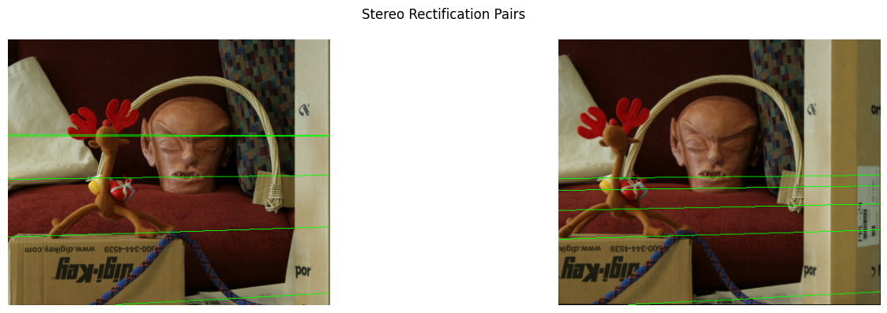
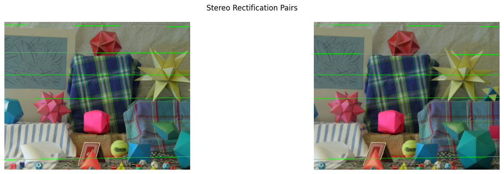
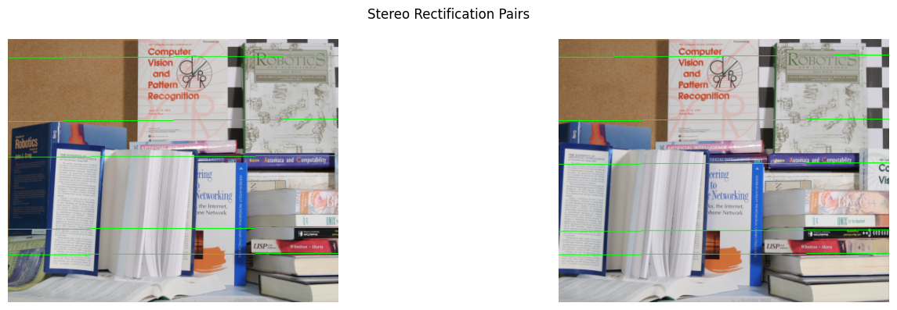
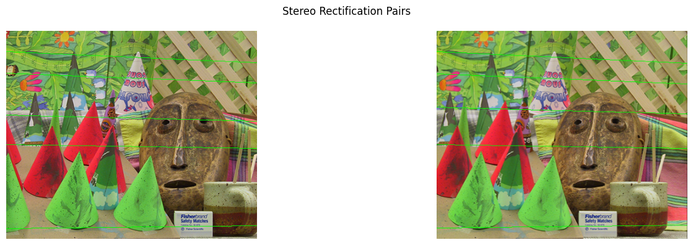
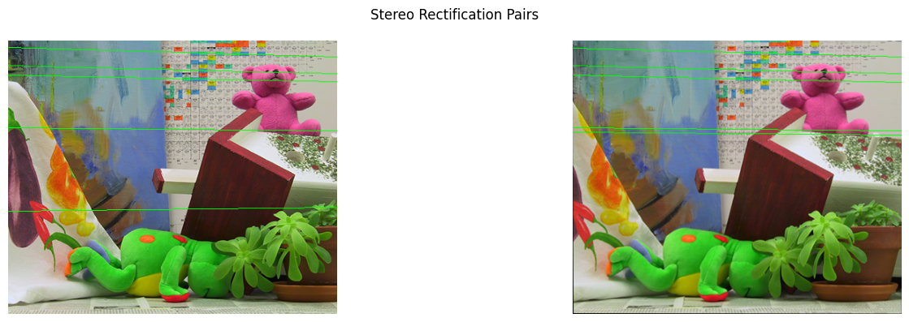
def disparity_map(image_a, image_b, window_size=9, max_disp=80):
# Ensure the images are grayscale (if not already)
if len(image_a.shape) == 3:
image_a = cv2.cvtColor(image_a, cv2.COLOR_BGR2GRAY)
if len(image_b.shape) == 3:
image_b = cv2.cvtColor(image_b, cv2.COLOR_BGR2GRAY)
# Initialize the StereoSGBM disparity calculation
min_disp = 16 # Minimum disparity
num_disp = max_disp - min_disp # Number of disparities
stereo = cv2.StereoSGBM_create(
minDisparity=min_disp,
numDisparities=num_disp,
blockSize=window_size,
P1=8 * 3 * window_size ** 2, # Penalty for disparity change by 1
P2=32 * 3 * window_size ** 2, # Penalty for disparity change by more than 1
disp12MaxDiff=1, # Maximum allowed difference for left-right consistency check
uniquenessRatio=10, # Uniqueness ratio (higher value means stronger confidence)
speckleWindowSize=100, # Speckle filtering window size
speckleRange=32, # Maximum disparity difference to filter out speckles
)
# Compute the disparity map
disp_map = stereo.compute(image_a, image_b).astype(np.float32) / 16.0 # Divide by 16 to scale to actual disparity values
# Normalize the disparity map for visualization (from 0 to 255)
disparity_normalized = cv2.normalize(disp_map, None, alpha=0, beta=255, norm_type=cv2.NORM_MINMAX)
disparity_normalized = np.uint8(disparity_normalized)
return disparity_normalizedfor pairs in rectified_pairs:
disp_map = disparity_map(pairs[0], pairs[1], window_size=5, max_disp=64)
# Optional: Visualize the disparity map
disp_map_colored = cv2.applyColorMap(np.uint8(disp_map), cv2.COLORMAP_VIRIDIS)
show_image_grid(np.array([pairs[0], pairs[1], disp_map_colored]), 1, 3, 'Disparity Maps for Each Pair', figsize=16)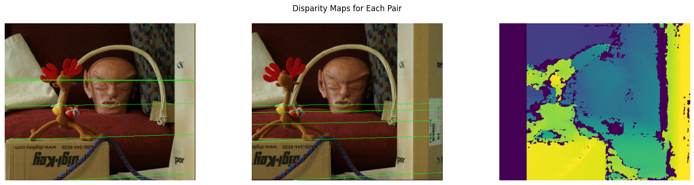
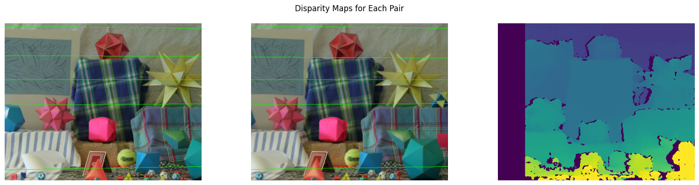
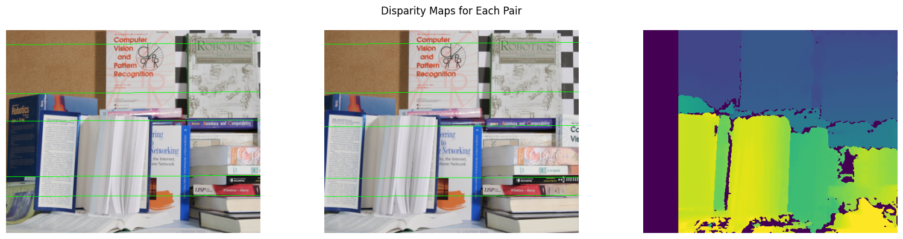
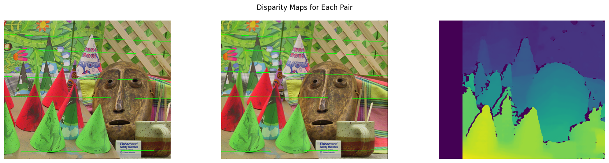
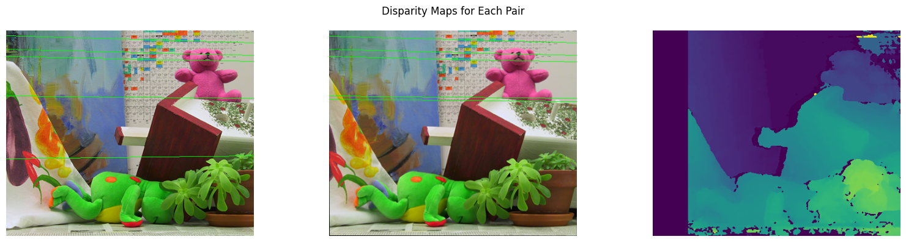